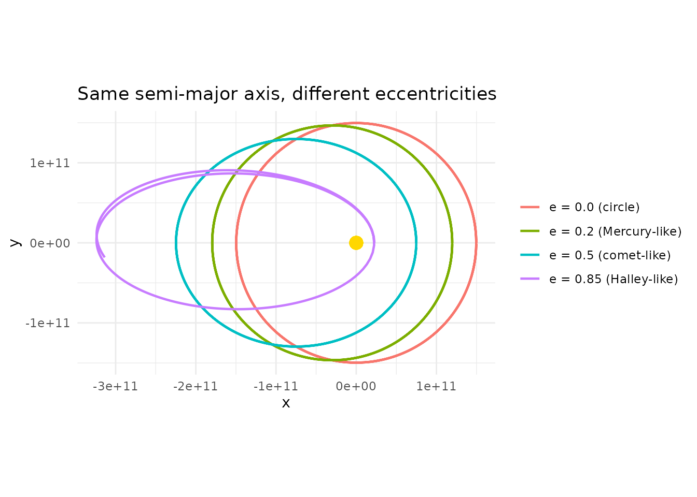
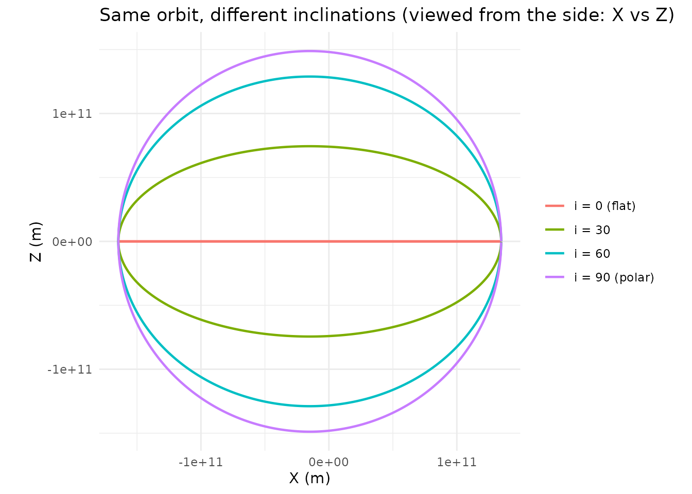
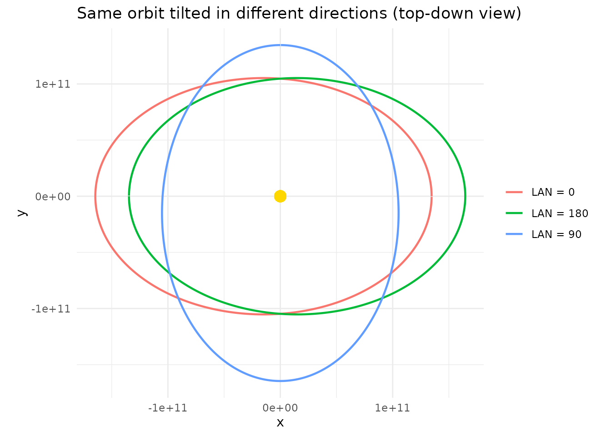
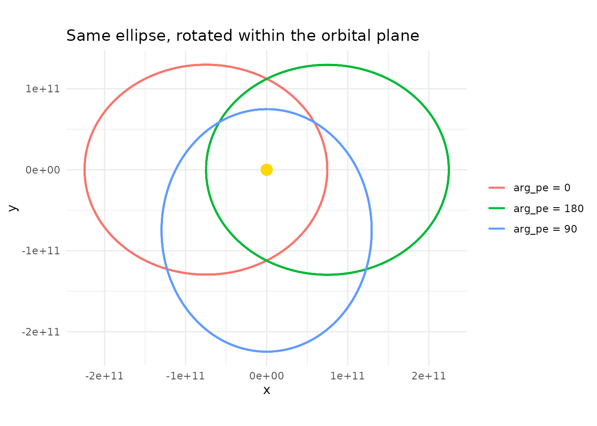
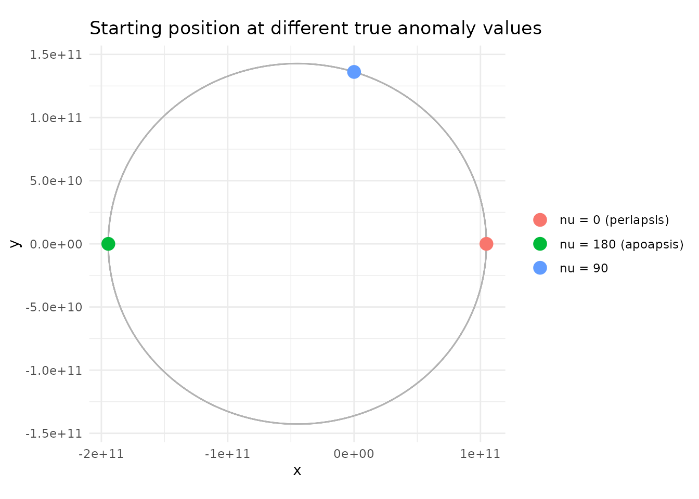
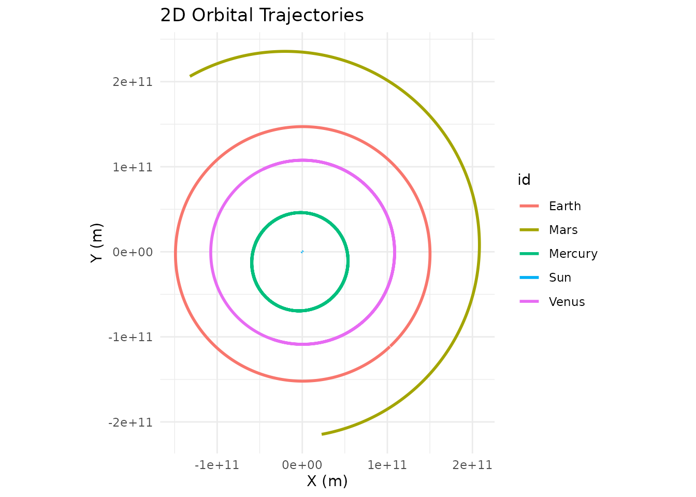
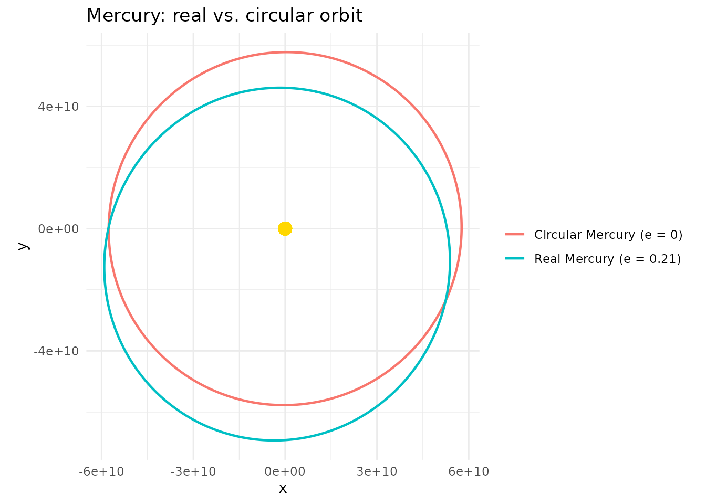

The Building Two-Body
Orbits guide shows how to set up orbits using Cartesian position and
velocity vectors — the x, y, z,
vx, vy, vz arguments on
add_body(). That’s the most flexible approach, but it
requires you to think in coordinates: “place the planet at (1.5e11, 0,
0) with velocity (0, 29780, 0).”
Astronomers have a different language for describing orbits. Instead
of positions and velocities, they use six numbers called
Keplerian orbital elements that describe the shape,
orientation, and current position of an orbit in a more intuitive way.
These are the inputs to add_body_keplerian() and the data
that add_planet() looks up for you behind the scenes.
This article explains what each element means physically, shows how
they affect the resulting orbit, and demonstrates how to use them in
orbitr.
The Six Elements
An orbit in three-dimensional space has six degrees of freedom — the same number as a Cartesian state vector (x, y, z, vx, vy, vz). The Keplerian elements split those six numbers into three intuitive groups: shape, orientation, and position.
Shape: Semi-Major Axis and Eccentricity
The first two elements define the geometry of the ellipse — how big it is and how stretched.
Semi-major axis
()
is the average distance from the orbiting body to its parent.
Technically it’s half the longest diameter of the ellipse. Larger
means a bigger orbit and a longer period. In orbitr, it’s
specified in meters.
Eccentricity () controls the shape. A circle has ; as increases toward 1, the ellipse becomes more elongated. At any point along the orbit, the actual distance from the parent is:
where is the true anomaly (the body’s current angular position — more on that below). At the closest approach (periapsis, ), the distance is . At the farthest point (apoapsis, ), it’s .
Let’s see how eccentricity changes the orbit shape:
make_ecc_orbit <- function(e, label) {
create_system() |>
add_sun() |>
add_body_keplerian(
"Planet", mass = 1e24, parent = "Sun",
a = distance_earth_sun, e = e, nu = 0
) |>
simulate_system(time_step = seconds_per_day, duration = seconds_per_year * 2) |>
filter(id == "Planet") |>
mutate(case = label)
}
bind_rows(
make_ecc_orbit(0.0, "e = 0.0 (circle)"),
make_ecc_orbit(0.2, "e = 0.2 (Mercury-like)"),
make_ecc_orbit(0.5, "e = 0.5 (comet-like)"),
make_ecc_orbit(0.85, "e = 0.85 (Halley-like)")
) |>
ggplot(aes(x = x, y = y, color = case)) +
geom_path(linewidth = 0.8) +
geom_point(x = 0, y = 0, color = "gold", size = 4, inherit.aes = FALSE) +
coord_equal() +
theme_minimal() +
labs(title = "Same semi-major axis, different eccentricities",
color = NULL)
All four orbits have the same semi-major axis, so they have the same orbital period (Kepler’s Third Law: ). But their shapes are radically different — from a perfect circle to a narrow ellipse that barely misses the Sun at periapsis and swings far out at apoapsis.
Orientation: Inclination, Longitude of Ascending Node, and Argument of Periapsis
The next three elements rotate and tilt the ellipse in 3D space. They’re specified in degrees.
Inclination () is the tilt of the orbital plane relative to a reference plane (typically the ecliptic — the plane of Earth’s orbit). An inclination of means the orbit lies flat in the reference plane. means the orbit is perpendicular to it.
make_inc_orbit <- function(inc, label) {
create_system() |>
add_sun() |>
add_body_keplerian(
"Planet", mass = 1e24, parent = "Sun",
a = distance_earth_sun, e = 0.1, i = inc, nu = 0
) |>
simulate_system(time_step = seconds_per_day, duration = seconds_per_year) |>
filter(id == "Planet") |>
mutate(case = label)
}
bind_rows(
make_inc_orbit(0, "i = 0 (flat)"),
make_inc_orbit(30, "i = 30"),
make_inc_orbit(60, "i = 60"),
make_inc_orbit(90, "i = 90 (polar)")
) |>
ggplot(aes(x = x, y = z, color = case)) +
geom_path(linewidth = 0.8) +
coord_equal() +
theme_minimal() +
labs(title = "Same orbit, different inclinations (viewed from the side: X vs Z)",
x = "X (m)", y = "Z (m)", color = NULL)
The flat orbit () stays in the XY plane with . As inclination increases, the orbit tilts further out of the plane until makes a full polar orbit.
Longitude of ascending node
(,
called lan in orbitr) is the compass direction
of the tilt. It measures the angle from a reference direction (the
vernal equinox in real astronomy) to the point where the orbit crosses
the reference plane going “upward.” Think of inclination as how
much the orbit tilts, and
as which direction it tilts toward.
When , the ascending node is undefined and has no effect.
make_lan_orbit <- function(lan_val, label) {
create_system() |>
add_sun() |>
add_body_keplerian(
"Planet", mass = 1e24, parent = "Sun",
a = distance_earth_sun, e = 0.1, i = 45, lan = lan_val, nu = 0
) |>
simulate_system(time_step = seconds_per_day, duration = seconds_per_year) |>
filter(id == "Planet") |>
mutate(case = label)
}
bind_rows(
make_lan_orbit(0, "LAN = 0"),
make_lan_orbit(90, "LAN = 90"),
make_lan_orbit(180, "LAN = 180")
) |>
ggplot(aes(x = x, y = y, color = case)) +
geom_path(linewidth = 0.8) +
geom_point(x = 0, y = 0, color = "gold", size = 4, inherit.aes = FALSE) +
coord_equal() +
theme_minimal() +
labs(title = "Same orbit tilted in different directions (top-down view)",
color = NULL)
All three orbits have the same shape and inclination — just rotates the whole tilted plane around the vertical axis.
Argument of periapsis
(,
called arg_pe in orbitr) is the angle
within the orbital plane from the ascending node to the
closest-approach point (periapsis). It controls where along the orbit
the body gets closest to its parent.
make_argpe_orbit <- function(argpe_val, label) {
create_system() |>
add_sun() |>
add_body_keplerian(
"Planet", mass = 1e24, parent = "Sun",
a = distance_earth_sun, e = 0.5, arg_pe = argpe_val, nu = 0
) |>
simulate_system(time_step = seconds_per_day, duration = seconds_per_year * 2) |>
filter(id == "Planet") |>
mutate(case = label)
}
bind_rows(
make_argpe_orbit(0, "arg_pe = 0"),
make_argpe_orbit(90, "arg_pe = 90"),
make_argpe_orbit(180, "arg_pe = 180")
) |>
ggplot(aes(x = x, y = y, color = case)) +
geom_path(linewidth = 0.8) +
geom_point(x = 0, y = 0, color = "gold", size = 4, inherit.aes = FALSE) +
coord_equal() +
theme_minimal() +
labs(title = "Same ellipse, rotated within the orbital plane",
color = NULL)
The ellipse is the same shape every time — just spins it around the parent, moving the periapsis to different points along the orbit.
Position: True Anomaly
The final element pins down where the body currently is along its orbit.
True anomaly
(,
called nu in orbitr) is the angle measured
from periapsis to the body’s current position, in the direction of
orbital motion.
means the body starts at periapsis (closest point);
puts it at apoapsis (farthest point).
sys_0 <- create_system() |>
add_sun() |>
add_body_keplerian("Planet", mass = 1e24, parent = "Sun",
a = distance_earth_sun, e = 0.3, nu = 0)
sys_90 <- create_system() |>
add_sun() |>
add_body_keplerian("Planet", mass = 1e24, parent = "Sun",
a = distance_earth_sun, e = 0.3, nu = 90)
sys_180 <- create_system() |>
add_sun() |>
add_body_keplerian("Planet", mass = 1e24, parent = "Sun",
a = distance_earth_sun, e = 0.3, nu = 180)
# Plot starting positions
starts <- bind_rows(
sys_0$bodies |> filter(id == "Planet") |> mutate(case = "nu = 0 (periapsis)"),
sys_90$bodies |> filter(id == "Planet") |> mutate(case = "nu = 90"),
sys_180$bodies |> filter(id == "Planet") |> mutate(case = "nu = 180 (apoapsis)")
)
# Full orbit for reference
orbit <- simulate_system(sys_0, time_step = seconds_per_day,
duration = seconds_per_year * 2) |>
filter(id == "Planet")
ggplot() +
geom_path(data = orbit, aes(x = x, y = y), color = "grey70", linewidth = 0.5) +
geom_point(data = starts, aes(x = x, y = y, color = case), size = 4) +
geom_point(x = 0, y = 0, color = "gold", size = 4) +
coord_equal() +
theme_minimal() +
labs(title = "Starting position at different true anomaly values",
color = NULL)
By default, add_body_keplerian() and
add_planet() use
(starting at periapsis). In load_solar_system(), all
planets start at periapsis — if you want to spread them out around their
orbits for a more realistic snapshot, pass different nu
values to add_planet():
# Spread the inner planets around their orbits
create_system() |>
add_sun() |>
add_planet("Mercury", parent = "Sun", nu = 30) |>
add_planet("Venus", parent = "Sun", nu = 120) |>
add_planet("Earth", parent = "Sun", nu = 210) |>
add_planet("Mars", parent = "Sun", nu = 300) |>
simulate_system(time_step = seconds_per_day, duration = seconds_per_year) |>
plot_orbits(three_d = FALSE)
The Conversion: Elements to Cartesian
Under the hood, add_body_keplerian() converts the six
elements into a Cartesian state vector (position and velocity) through a
three-step process. Understanding this isn’t necessary for using the
function, but it’s useful if you want to verify the math or extend
it.
Step 1: Position and velocity in the orbital plane. The orbit equation gives the distance at the current true anomaly:
Position in the perifocal frame (a coordinate system aligned with the orbit, x-axis pointing toward periapsis):
The specific angular momentum (where ) gives the velocity:
Step 2: Rotate into inertial coordinates. Three successive rotations — by around the orbit normal, by around the node line, and by around the reference pole — transform from the perifocal frame to the inertial reference frame.
Step 3: Add parent’s state. The resulting position
and velocity are relative to the parent body.
add_body_keplerian() adds the parent’s current position and
velocity to produce absolute coordinates in the simulation frame.
Using add_planet() for Quick Setup
For the ten bodies that orbitr knows about (Mercury
through Neptune, plus the Moon and Pluto), add_planet()
handles the element lookup automatically. The full list, with their real
eccentricities and inclinations:
| Body | Eccentricity | Inclination | Parent |
|---|---|---|---|
| Mercury | 0.2056 | 7.00° | Sun |
| Venus | 0.0068 | 3.39° | Sun |
| Earth | 0.0167 | 0.00° | Sun |
| Mars | 0.0934 | 1.85° | Sun |
| Jupiter | 0.0489 | 1.30° | Sun |
| Saturn | 0.0565 | 2.49° | Sun |
| Uranus | 0.0457 | 0.77° | Sun |
| Neptune | 0.0113 | 1.77° | Sun |
| Moon | 0.0549 | 5.15° | Earth |
| Pluto | 0.2488 | 17.16° | Sun |
Notice the range: Venus has an almost perfectly circular orbit (), while Pluto’s is quite eccentric () and steeply tilted (). Mercury is the most eccentric planet () and the most inclined to the ecliptic ().
Any element can be overridden. This makes add_planet()
useful for thought experiments:
# What if Mercury's orbit were circular? How different would it look?
bind_rows(
create_system() |>
add_sun() |>
add_planet("Mercury", parent = "Sun") |>
simulate_system(time_step = seconds_per_hour * 6, duration = seconds_per_day * 88) |>
filter(id == "Mercury") |>
mutate(case = "Real Mercury (e = 0.21)"),
create_system() |>
add_sun() |>
add_planet("Mercury", parent = "Sun", e = 0) |>
simulate_system(time_step = seconds_per_hour * 6, duration = seconds_per_day * 88) |>
filter(id == "Mercury") |>
mutate(case = "Circular Mercury (e = 0)")
) |>
ggplot(aes(x = x, y = y, color = case)) +
geom_path(linewidth = 0.8) +
geom_point(x = 0, y = 0, color = "gold", size = 4, inherit.aes = FALSE) +
coord_equal() +
theme_minimal() +
labs(title = "Mercury: real vs. circular orbit", color = NULL)
Keplerian vs. Cartesian: When to Use Which
Use add_body() with Cartesian vectors
when you’re building a system from physical intuition about positions
and velocities — binary stars, custom test particles, or anything where
you’ve worked out the velocity from
by hand. The Building Two-Body
Orbits guide covers this approach in depth.
Use add_body_keplerian() when you know
the orbital parameters of a real or fictional body, or when you want
precise control over the orbit’s shape and orientation. It’s especially
useful for inclined or eccentric orbits where computing the right
Cartesian velocity by hand would be tedious.
Use add_planet() when you just want a
real solar system body with correct data and don’t need to think about
any of this.